SCIENCE 10
UNIT A: ENERGY AND MATTER IN CHEMICAL CHANGE
SCIENCE 10
Program of Studies
SCIENCE 10
Program of Studies
Unit A: Energy and Matter in Chemical Change (Nature of Science Emphasis)
Overview: Chemical changes involve energy and transformations of matter. A knowledge of the underlying structure of matter and the basic chemical species is important in understanding chemical changes. As students explore the properties of molecular and ionic compounds, including acids and bases, they begin to appreciate the need for a classification scheme and a system of nomenclature. Students classify, name compounds and write balanced chemical equations to represent chemical changes. As well, students are introduced to the law of conservation of mass and the mole concept.Links to Science
The following science concepts are related to the content of Unit A. Concepts- particle model of matter - Grade 7 Science, Unit C: Heat and Temperature
- WHMIS symbols, pure substances, mixtures and solutions - Grade 8 Science, Unit A: Mix and Flow of Matter
- reactants, products, conservation of mass, periodic table, elements, compounds, atomic theory, chemical nomenclature - Grade 9 Science, Unit B: Matter and Chemical Change
- acids and bases - Grade 9 Science, Unit C: Environmental Chemistry
- How has knowledge of the structure of matter led to other scientific advancements?
- How do elements combine?
- Can these combinations be classified and the products be predicted and quantified?
- Why do scientists classify chemical change, follow guidelines for nomenclature and represent chemical change with equations?
Key Concepts
The following concepts are developed in this unit and may also be addressed in other units at other grade/course levels. The intended level and scope of treatment is defined by the outcomes below.- how chemical substances meet human needs
- Workplace Hazardous Materials Information System (WHMIS) and safe practices
- International Union of Pure and Applied Chemistry (IUPAC) nomenclature, ionic and molecular compounds, acids and bases
- evidence of chemical change
- role and need for classification of chemical change
- writing and balancing equations
- law of conservation of mass and the mole concept
Outcomes for Science, Technology and Society (STS) and Knowledge
Students will:- 1. Describe the basic particles that make up the underlying structure of matter, and investigate related technologies
- identify historical examples of how humans worked with chemical substances to meet their basic needs
(e.g., how precontact First Nations communities used biotic and abiotic materials to meet their needs)
- outline the role of evidence in the development of the atomic model consisting of protons and neutrons (nucleons) and electrons; i.e., Dalton, Thomson, Rutherford, Bohr
- identify examples of chemistry-based careers in the community
(e.g., chemical engineering, cosmetology, food processing)
- Explain, using the periodic table, how elements combine to form compounds, and follow IUPAC guidelines for naming ionic compounds and simple molecular compounds
- illustrate an awareness of WHMIS guidelines, and demonstrate safe practices in the handling, storage and disposal of chemicals in the laboratory and at home
- explain the importance of and need for the IUPAC system of naming compounds, in terms of the work that scientists do and the need to communicate clearly and precisely
- explain, using the periodic table, how and why elements combine to form compounds in specific ratios
- predict formulas and write names for ionic and molecular compounds and common acids
(e.g., sulfuric, hydrochloric, nitric, ethanoic) , using a periodic table, a table of ions and IUPAC rules
- classify ionic and molecular compounds, acids and bases on the basis of their properties; i.e., conductivity, pH, solubility, state
- predict whether an ionic compound is relatively soluble in water, using a solubility chart
- relate the molecular structure of simple substances to their properties
(e.g., describe how the properties of water are due to the polar nature of water molecules, and relate this property to the transfer of energy in physical and living systems)
- outline the issues related to personal and societal use of potentially toxic or hazardous compounds
(e.g., health hazards due to excessive consumption of alcohol and nicotine; exposure to toxic substances; environmental concerns related to the handling, storage and disposal of heavy metals, strong acids, flammable gases, volatile liquids)
- Identify and classify chemical changes, and write word and balanced chemical equations for significant chemical reactions, as applications of Lavoisier’s law of conservation of mass
- provide examples of household, commercial and industrial processes that use chemical reactions to produce useful substances and energy
(e.g., baking powder in baking, combustion of fuels, electrolysis of water into H2(g) and O2(g))
- identify chemical reactions that are significant in societies
(e.g., reactions that maintain living systems, such as photosynthesis and respiration; reactions that have an impact on the environment, such as combustion reactions and decomposition of waste materials)
- describe the evidence for chemical changes; i.e., energy change, formation of a gas or precipitate, colour or odour change, change in temperature
- differentiate between endothermic and exothermic chemical reactions (e.g.,combustion of gasoline and other natural and synthetic fuels, photosynthesis)
- classify and identify categories of chemical reactions; i.e., formation (synthesis), decomposition, hydrocarbon combustion, single replacement, double replacement
- translate word equations to balanced chemical equations and vice versa for chemical reactions that occur in living and nonliving systems
- predict the products of formation (synthesis) and decomposition, single and double replacement, and hydrocarbon combustion chemical reactions, when given the reactants
- define the mole as the amount of an element containing 6.02 × 1023 atoms (Avogadro’s number) and apply the concept to calculate quantities of substances made of other chemical species (e.g., determine the quantity of water that contains 6.02 × 1023 molecules of H2O)
- interpret balanced chemical equations in terms of moles of chemical species, and relate the mole concept to the law of conservation of mass
Skill Outcomes
(focus on scientific inquiry)Initiating and Planning
Students will:Ask questions about observed relationships, and plan investigations of questions, ideas, problems and issues
- define and delimit problems to facilitate investigation
- design an experiment, identifying and controlling major variables
(e.g., design an experiment to differentiate between categories of matter, such as acids, bases and neutral solutions, and identify manipulated and responding variables)
- state a prediction and a hypothesis based on available evidence and background information
(e.g., state a hypothesis about what happens to baking soda during baking)
- evaluate and select appropriate instruments for collecting evidence and appropriate processes for problem solving, inquiring and decision making
(e.g., list appropriate technology for classifying compounds, such as litmus paper or conductivity tester)
Performing and Recording
Students will:Conduct investigations into relationships between and among observable variables, and use a broad range of tools and techniques to gather and record data and information
- carry out procedures, controlling the major variables and adapting or extending procedures
(e.g., when performing an experiment to illustrate conservation of mass, demonstrate an understanding of closed and open systems and control for loss or gain of matter during a chemical change)
- use library and electronic research tools to collect information on a given topic
(e.g., information on compounds we use and their toxicity, using standard references, such as the Merck Index, as well as Internet searches)
- select and integrate information from various print and electronic sources or from several parts of the same source
(e.g., collect information on research into subatomic matter, research how pre-contact First Nations communities used available materials such as brain tissue for tanning hides)
- demonstrate a knowledge of WHMIS standards by selecting and applying proper techniques for the handling and disposal of laboratory materials
(e.g., recognize and use Material Safety Data Sheets [MSDS] information)
- select and use apparatus, technology and materials safely
(e.g., use equipment, such as Bunsen burners, electronic balances, laboratory glassware, electronic probes and calculators correctly and safely)
Analyzing and Interpreting
Students will:Analyze data and apply mathematical and conceptual models to develop and assess possible solutions
- describe and apply classification systems and nomenclature used in the sciences
(e.g., investigate periodicity in the periodic table, classify matter, and name elements and compounds based on IUPAC guidelines)
- apply and assess alternative theoretical models for interpreting knowledge in a given field
(e.g., compare models for the structure of the atom)
- compare theoretical and empirical values and account for discrepancies
(e.g., measure the mass of a chemical reaction system before and after a change, and account for any discrepancies)
- identify and explain sources of error and uncertainty in measurement, and express results in a form that acknowledges the degree of uncertainty
(e.g., measure and record the mass of a material, use significant digits appropriately)
- identify new questions or problems that arise from what was learned
(e.g., how did ancient peoples discover how to separate metals from their ores?; evaluate the traditional Aboriginal method for determining alkaline properties of substances)
Communication and Teamwork
Students will:Work as members of a team in addressing problems, and apply the skills and conventions of science in communicating information and ideas and in assessing results
- communicate questions, ideas and intentions; and receive, interpret, understand, support and
respond to the ideas of others
(e.g., use appropriate communication technology to elicit feedback from others)
- represent large and small numbers using appropriate scientific notation
- select and use appropriate numeric, symbolic, graphical and linguistic modes of representation to communicate ideas, plans and results
(e.g., use appropriate Système international (SI) units, and IUPAC nomenclature)
Attitude Outcomes
Interest in ScienceStudents will be encouraged to:
Show interest in science-related questions and issues, and confidently pursue personal interests and career possibilities within science-related fields
(e.g., apply concepts learned in the classroom to the everyday use of chemicals; show interest in a broad scope of chemistry-related careers)
Mutual Respect
Students will be encouraged to:
Appreciate that scientific understanding evolves from the interaction of ideas involving people with different views and backgrounds
(e.g., recognize the contributions of Canadians to contemporary knowledge of the structure of matter; show awareness of and respect for traditional Aboriginal knowledge about the use of biotic and abiotic materials)
Scientific Inquiry
Students will be encouraged to:
Seek and apply evidence when evaluating alternative approaches to investigations, problems and issues
(e.g., evaluate inferences and conclusions based on particles of matter that cannot be observed directly)
Collaboration
Students will be encouraged to:
Work collaboratively in planning and carrying out investigations, as well as in generating and evaluating ideas
(e.g., contribute to group work willingly, assume a variety of roles and accept responsibility for any problems that arise)
Stewardship
Students will be encouraged to:
Demonstrate sensitivity and responsibility in pursuing a balance between the needs of humans and a sustainable environment
(e.g., recognize that environmental consequences may arise from the development, use and disposal of chemical materials)
Safety
Students will be encouraged to:
Show concern for safety in planning, carrying out and reviewing activities
(e.g., acknowledge the need for regulations to govern the storage, handling and disposal of potentially hazardous materials in the school laboratory and at home or in the workplace)
Links to Mathematics
The following mathematics outcomes are related to the content of Unit A but are not considered prerequisites.- Data Collection and Analysis - Grade 9 Mathematics, Statistics and Probability (Data Analysis), Specific Outcome 3
- Measurement and Unit Conversions - Mathematics 10C, Measurement,Specific Outcome 2; Mathematics 10-3, Measurement, Specific Outcome 1;Mathematics 20-3, Algebra, Specific Outcome 3; Mathematics 30-3, Measurement, Specific Outcome 1
- Ratio and Proportions - Grade 8 Mathematics, Number, Specific Outcomes 3, 4 and 5
- Graph Analysis - Mathematics10C, Relations and Functions, Specific Outcomes 1 and 4;Mathematics 20-3, Statistics, Specific Outcome 1
- Powers - Mathematics10C, Algebra and Number, Specific Outcome 3
Unit Focus Questions
- How has knowledge of the structure of matter led to other scientific advancements?
- How do elements combine? Can these combinations be classified and the products be predicted and quantified?
- Why do scientists classify chemical change, follow guidelines for nomenclature and represent chemical change with equations?
Chapter A2.0 Elements combine to form many substances, each with its own set of properties
Key Concepts
In this section you will learn about the following key concepts:- Chemical substances and human needs
- International Union of Pure and Applied Chemistry(IUPAC) nomenclature, ionic and molecular compounds, acids and bases.
Learning Outcomes
When you have completed this section, you will be able to:- Explain how and why element combine to form compounds in specific ratios, with reference to the periodic table
- Explain the importance of the IUPAC system of naming compounds
- Predict formulas and write names for ionic and molecule compounds and common acids
- Classify ionic and molecular compounds and acids and bases on the basis of these properties: conductivity; pH, solubility, and state
- Predict whether an ionic compound is soluble in water, by consulting a solubility chart.
- Relate the molecular structure of simple substances to their properties
- Outline issues related to personal and societal uses of potentially toxic or hazardous compounds
- Provide examples of chemistry-based careers in your community.
A2.1 The Periodic Table and Atomic Structure
The Elements
There are about 90 naturally occurring elements and another 25 synthetic (man-made) elements. Based on their properties all elements are divided into three classes: metals, non-metals and metalloids.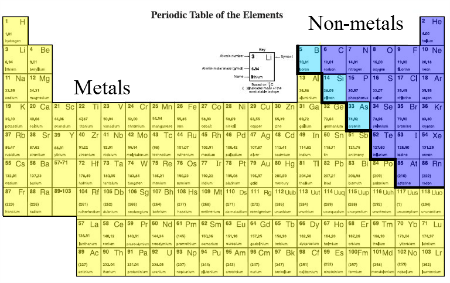
Metals
- conduct heat and electricity easily
- silver/grey or yellow/gold in colour
- shiney
- malleable - can be beaten or rolled into sheets without crumbling
- ductile - can be stretched into a wire
- solids at room temperature except for mercury which is a liquid
Non-metals
- Non-conductors - will not allow electrons to move easily
- Only 17 elements
- They are not similar to each other
- Multiple colours
- Reactivity varies
- State varies (solid, liquid or gas)
Metalloids
- Ex. Silicon, boron and arsenic
- Semi-conductors - will allow some electrons to flow but are resistive.
- Located between the metals and non-metals
- Properties vary
The Periodic Table
Organizes elements based on their properties. Metals are on the left, non-metals on the upper right and metalloid are in between.Periods - Each horizontal row is called a period.
Groups - Each vertical column is called a group or family. Groups tend to behave the same way.
- Group one is called the alkali metals. They are all soft, shiny, silver coloured and very reactive with water.
- Group two is called the alkaline-earth metals. They are shiny and silver but not as soft as the alkali metals. They are less reactive than group one.
- Group 18 is called the noble gases. They are very non-reactive and gaseous.
- Group 17 is called the halogens. These elements are poisonous and react readily with the alkali metals to form ionic salts.
Atomic Theory
The smallest stable particle is called an atom. Atoms are extremely small, about 10-10 m across.Subatomic Particles
Sub, means small. Subatomic, means smaller than an atom.
Atoms are made of three subatomic particles electrons (negatively charged), protons (positively charged) and neutrons (no charge). All the protons and neutrons are clustered in the nucleus at the center of the atom. The nucleus is extremely small but makes up 99.9% of the atom's mass
Energy Levels
The electrons are grouped in energy levels. Each energy level is a large distance from the nucleus and makes up 99.9% of the atom's volume. Electrons are normally found in the energy levels closest to the nucleus.
Atomic Number
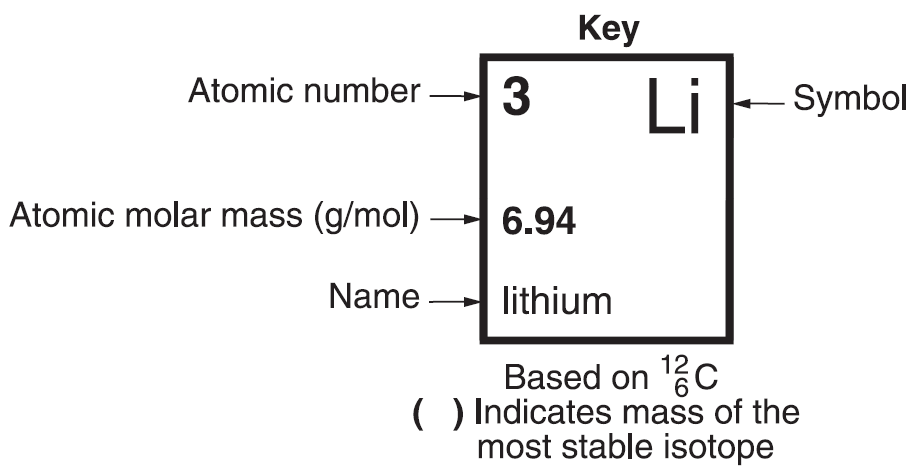Atomic number - number of protons in a atom; can be used to specify an element. Each element has a unique number of protons. It is the number of protons that dictates what element the atom is.
Mass Number and Atomic Molar Mass
Atomic molar mass - average molar mass of an element's atoms, including those of all the element’s different isotopes.Isotopes - atoms of the same element containing different numbers of neutrons. The number of neutrons can be calculated from the isotope's atomic mass and the atomic number.
# neutrons = isotope mass - atomic number
Ex. How many neutrons does carbon-14 have?
carbon has an atomic number of 6
carbon-14 has a mass of 14
The mass - atomic number is 14 - 6 = 8 protons
carbon 14 has 6 protons and 8 protons for a total mass of 14.
carbon-14 has a mass of 14
The mass - atomic number is 14 - 6 = 8 protons
carbon 14 has 6 protons and 8 protons for a total mass of 14.
Formation of Ions
Ion - electrically charged atom; occurs by losing (positive) or gaining (negative) electrons.Ionization - process of an atom gaining or losing electrons.
Cations - positively charged ion.
Anions - negatively charged ion.
Elements Combine to Form Compounds
Valence electrons - electron in the outermost energy level of an atom.For metals like lithium and beryllium it is easier to lose all their valence electrons and become cations than to gain enough electrons to fill their outer valence level with 8 electrons.
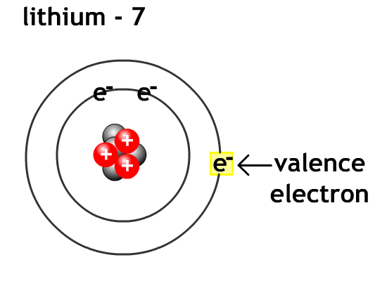 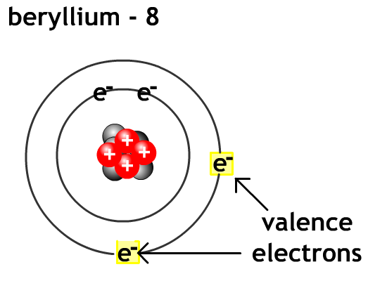
For non-metals like oxygen and flourine it is easier to gain valence electron level to eight electrons (octet rule) and become anions than go lose enough electrons to empty their outer valence level.
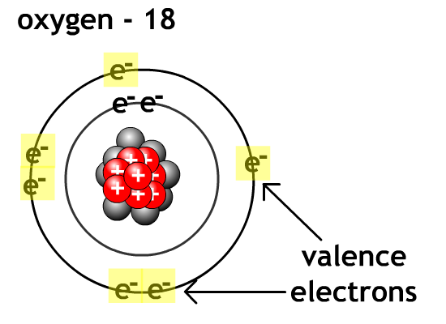 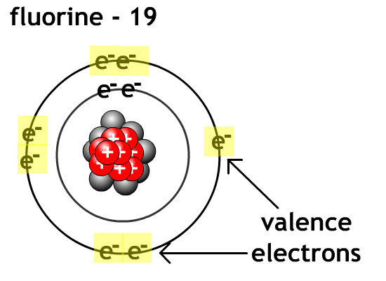
Compound - chemical combination of two or more elements in a specific ratio.
The Octet Rule
Octet rule - atoms bond in such a way as to have eight electrons in the valence energy level; also called the rule of eight. Atoms on the left side of the periodic table will lose electrons to become stable. Atoms on the right side of the periodic table will gain electrons to become stable..
A2.2 Naming Ionic and Molecular Compounds
Ionic Compounds
Crystal lattice - organized array of ions.Formula unit - smallest amount of an ionic compound with the composition shown by the chemical formula; number of positive and negative ions in the smallest whole-number ratio that results in a neutral unit in the crystal lattice of a compound.
Ionic bond - type of bond formed when electrons transfer between metals and non-metals. Most ionic compounds are called salts. Table salt is sodium chloride, road salt is calcium chloride.
Ionic compounds dissolve in water and then can carry an electrical current. This is how our nervous system conducts electrical signals.
Naming Ionic Compounds
- Name the cation first by using the element's name (usually the metal)
- Name the anion second by using the first part of the element's name and changing the last part to "-ide" (usually the non-metal)
Formulae for Ionic Compounds
When calculating the ratio of compounds for the formula unit, the total charge of the formula unit must be zero. The charges on one element must balance the charges on the other element.Ex. What is the formula unit when lithium and nitrogen are combined.
Lithium Li+ loses one electron to become 1 positive
Nitrogen N3- gains three electrons to become 3 negative
To balance the 3 negative charge on the nitrogen requires 3 lithium atoms
Formula unit = Li3N(s)
The nitrogen steals the electrons from the lithium and the opposite electric charges hold them together with electrostatic attraction.
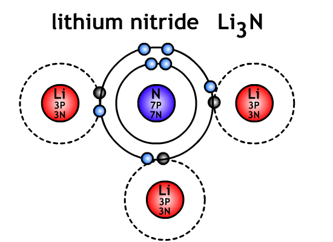
Nitrogen N3- gains three electrons to become 3 negative
To balance the 3 negative charge on the nitrogen requires 3 lithium atoms
Formula unit = Li3N(s)
The nitrogen steals the electrons from the lithium and the opposite electric charges hold them together with electrostatic attraction.
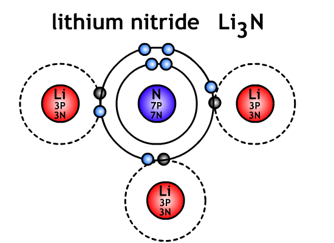
Ex. What is the formula unit when beryllium and phosphorus are combined
Beryllium Be2+ loses two electrons to become 2 positive
Phosphorus P3- gains three electrons to become 3 negative
The three charge on the phosphorus cannot be divided by the 2 charge on the beryllium. Try two phosphorus The six charge on the two phosphorus atoms requires 3 beryllium atoms
Formula unit = Be3P2
Phosphorus P3- gains three electrons to become 3 negative
The three charge on the phosphorus cannot be divided by the 2 charge on the beryllium. Try two phosphorus The six charge on the two phosphorus atoms requires 3 beryllium atoms
Formula unit = Be3P2
Compounds with Multivalent Elements
Multivalent - element with more than one stable ion, charge indicated with roman numerals in brackets Some metals have more than one stable ion. For example: Iron can be Fe2+ or Fe3+, Vanadium can be V5+ or V4+. Most common valence charge is on top.The multivalent metals are located in families 3 to 12. When in a compound the valence is indicated using roman numerals in brackets after the multivalent element. The valence on top is the more common ionic charge.
Ex.
Fe3+ and O2- is Fe2O3 and is called iron (III) oxide. This is the more common form.
Fe2+ and O2- is FeO and is called iron (II) oxide.
V5+ and Ge4- is V4Ge5 and is called vanadium (V) germanide. This is the more common form.
V4+ and Ge4- is VGe and is called vanadium (IV) germanide.
Fe2+ and O2- is FeO and is called iron (II) oxide.
V5+ and Ge4- is V4Ge5 and is called vanadium (V) germanide. This is the more common form.
V4+ and Ge4- is VGe and is called vanadium (IV) germanide.
Polyatomic Ions
Polyatomic ions - ion made up of several non-metallic atoms joined together. Treat them as a single ion Table above the periodic table shows the polyatomic ions.A sulfate ion SO42-, acts like a single atom with a two negative charge.
Suffixes for polyatomic ions
Some polyatomic ion have the similar combinations of atoms but with different charges and names.
"-ate" means more oxygen atoms
"-ite" means less oxygen atoms
Ex.
nitrate is NO3- and nitrite is NO2-
sulfate is SO42- and sulfite is SO32-
sulfate is SO42- and sulfite is SO32-
Naming Compounds Containing Polyatomic Ions
When you have more than two elements in an ionic compound look up the parts in the table. Use the names given in the table.
Writing Formulas for Compounds Containing Polyatomic Ions
Treat the polyatomic just like a regular ion. The only difference is that if there is more than one of the polyatomic ion, then the polyatomic ion must be placed in brackets to show that there is more than on ion present.Ex. What is the formula of cobalt (III) permanganate?
Cobalt (III) Co3+ has a positive three charge
Permanganate MnO4- has a negative one charge
It will take three permaganates to balance the cobalt (III)
Formula unit = Co(MNO4)3
Permanganate MnO4- has a negative one charge
It will take three permaganates to balance the cobalt (III)
Formula unit = Co(MNO4)3
Ex. What is the formula of calcium borate
Calcium Ca2+ has a positive two charge
Borate BO32- has a negative three charge
To balance the charges it will take 3 calcium atoms and 2 borate ions.
Formula unit = Ca3(BO3)2
Borate BO32- has a negative three charge
To balance the charges it will take 3 calcium atoms and 2 borate ions.
Formula unit = Ca3(BO3)2
Molecular Compounds
Molecule - group of non-metallic atoms bound together by covalent bonds; can be made up of atoms of the same element or atoms of different elements.It can have two or more atoms of the same element or two or more atoms of different elements. Any solid will melt if you the temperature is high enough. IF you want to melt salt, all you have to do is turn up your oven. Sugar, being an organic compound melts at a much lower temperature 365 oF. Salt, being a mineral, is inorganic. Inorganic compounds require more energy (in this case, heat) to break apart. And by the way, salt is the only rock that humans can eat.
Sharing Electrons - Covalent Bonds
Covalent bond - bond formed when non-metallic atoms share electrons; atoms in a molecule are bound together by covalent bonds.
Molecular Elements
Molecular element - element that forms molecules made up only of its own atoms.Diatomic - molecule composed of two atoms of the same element
Diatomic elements end in "gens", hydrogen H2, nitrogen N2, oxygen2, and halogens.
Molecular Compounds That Do Not Contain Hydrogen
Molecular compounds are made from non-metals. Due to the geometry of single, double and triple covalent bonding there are many ways in which the atoms can bond together to form molecules. We use prefix to indicate the number of atoms of each element. The variations are unpredictable so you will have to research each individually.| Number of Atoms | Prefix |
|---|---|
| 1 | mono |
| 2 | di |
| 3 | tri |
| 4 | tetra |
| 5 | penta |
| 6 | hexa |
| 7 | hepta |
| 8 | ennea (nona) |
| 10 | deca |
Prefix + first element prefix + second element ending in "ide"
When the first prefix is mono it is normally dropped for simplicity
Ex.
CO is carbon monoxide
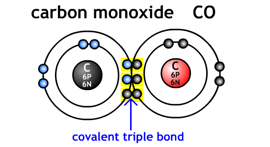
CO2 is carbon dioxide
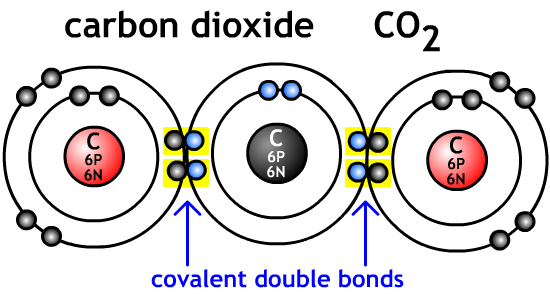
NO is nitrogen monoxide
NO2 is nitrogen dioxide
N2O3 is dinitrogen trioxide
N4O is tetranitrogen monoxide
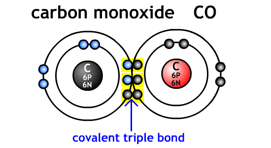
CO2 is carbon dioxide
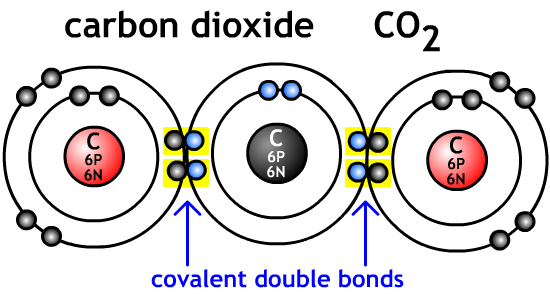
NO is nitrogen monoxide
NO2 is nitrogen dioxide
N2O3 is dinitrogen trioxide
N4O is tetranitrogen monoxide
Molecular Compounds That Contain Hydrogen
Molecular compound that contain hydrogen often have a specific name (H2O is water) because they are extremely common, so their common name is their official name. Otherwise, the naming is the same. H2O is officially water but dihydrogen monoxide is the same..
A2.3 Properties and Classification of Ionic and Molecular Compounds
Bonding animationIdentifying Ionic Compounds
Always a metal (+) and a non-metal (-) ionProperties of Ionic Compounds
High melting pointIonic compounds are solids at room temperature because of their high melting points (170 oC +)
Retention of Crystal Shape
Whatever size of particle is taken, the same distinctive crystal shape will be maintained with flat faces.
Solubility in Water
Polar - description of an object that has a positive electric charge at one end and a negative charge at the other; water molecules are slightly polar.
Due to the polar nature of water, ionic materials will dissolve in water and the ions will dissociate (separate).
Conductivity in solution
Electrolytes - solution that conducts electricity; ionic compounds are excellent electrolytes
Pure water is a non-conductor. Most tap water has large numbers of ions dissolved in it. The ions, due to their electrical charge, are very good conductors. Hence, water with ions in it (salt water, tap water) is a fairly good conductor. Our body uses electrolytes (gaterade, powerade) to send electrical signals through the nervous system.
Solubility of Ionic Compounds
Not all ionic compounds dissolve as well as others. You can dissolve more salt in hot water than cold water. A substance that does not dissolve well is called slightly soluble, whereas a substance that does dissolve well is called highly soluble.Find the table on page 10 of your data booklet.
Precipitate - solid with low solubility that forms from a solution.
Precipitation - (in solutions) process of forming a solid from a solution.
To remove ions from a solution, you need a substance to form a non-soluble form of the ion you want to remove. The ions will react and form a solid that will settle out or be filtered of the solution.
Properties of Molecular Compounds
Covalent bonds - bond formed when non-metallic atoms share electrons; atoms in a molecule are bound together by covalent bonds.Each group of atoms that form a molecule are bound together by very strong covalent bonds. However, the bonds between each molecule is very weak. It requires a lot of energy to separate the atoms from each other in a molecule, however, it is relatively simple to remove molecules from each other.
Molecular compounds have low boiling points and most of the smaller molecules are gaseous at room temperature. The larger molecules are liquid or solid at room temperature but easily change to a gas.
Ex.
- Methane CH4 is a gas (natural gas)
- Ethane C2H6 is a gas
- Propane C3H8 is a gas (gas bar-b-que)
- Butane C4H10 is a gas (lighter fuel)
- Hexane C6H14 is a liquid
- Heptane C7H14 is a liquid
- Octane C8H18 is a liquid (gasoline)
Special Properties of Water
Water is an unusual molecule because it is a bent shape and the electrons are not quite equally shared (due to hydrogen behaving like a metal). As a result of the molecular geometry and the unequal distribution of electrons, water has a slightly positively charged side, and a slightly negatively charged side. Water behaves like a molecular compound and an ionic compound.
Water has a high boiling point compared to molecular compounds but low compared to ionic compounds. It forms crystals when frozen (six sided snowflakes). See Snow Crystals.com for examples of snowflake photographs.
Due to its unusual properties it is critical to life. It holds most of the heat energy on the planet's surface. It allows our body to chemically react with ionic and molecular compounds. Without water's properties life would never exist on Earth.
Formation of Ice
As water molecules cool and lose energy, the molecules spread out into a hexagonal formation. The positive side of one molecule moves closer to the negative side of the adjacent molecule. Due to this alignment ice is less dense than water so it will float on water. All other solids sink in their liquid form.
.
A2.4 Acids and Bases
Bonding animationAcid - substance that produces hydrogen ions (H+) when dissolved in water; compound that dissolves in water to form a solution with a pH lower than 7
Base - substance that produces hydroxide ions (OH-) in water; compound that dissolves in water to form a solution with a pH greater than 7
pH - measure of the number of hydrogen ions (H+)in a solution; indicates how acidic or basic a substance is.
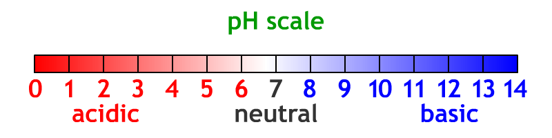
Acids and Bases in Your Body
Buffer - substance that keeps the pH of a solution nearly constant despite the addition of a small amount of acid or baseProperties of Acids and Bases
Acids- ionic compounds that are soluble
- have H which forms H+ ions in solution (left side) Ex. HCl - hydrogen chloride as solid hydrochloric acid as solution which dissociates into H+ and Cl- ions.
- not slippery to touch
- react with metals to form hydrogen gas
- Sour tasting Ex. lemons - citric acid, vinegar - acetic acid
- See page 12 in data booklet
- pH less than 7
- turn litmus red
- conduct electricity in solution
Bases
- Ionic compound that is very soluble
- Bitter tasting (soap)
- Feel slippery (bleach, soap, ammonia cleaner)
- Does not react with metals
- Have hydroxide (OH) which dissolves to OH- Ex. KOH - potassium hydroxide as a solid in water it dissociates into K+ and OH+ ions.
- Taste bitter (do not taste in lab)
- pH greater than 7
Indicators
Indicator - a substance that change colour at a specific pHLitmus paper is used to test if a solution is acidic or basic. If acidic the litmus paper turns red, it basic the litmus paper turns blue.
Universal indicator - mixture of several indicators that change colour as the acidity of a solution changes
The pH Scale
Neutral - description of a substance that is neither acidic nor basic; solution with a pH of 7The pH scale measures the number of hydrogen and hydronium ions in a solution. The scale goes from 1 (very acidic) lots of hydrogen ions, up to 7 (neutral) equal number of hydrogen and hydronium ions cancel each other out to water, up to 14 (very basic) lots of hydronium ions. Every increase of 1 on the pH scale changes the number of hydrogen/hydronium ions by a factor of 10 (times 10).
Naming Acids
In general acids have one or more hydrogen atoms at the start of the chemical formula.Ex.
hydrochloric acid - HCl (aq)
sulfuric acid - H2SO4 (aq)
nitric acid - HNO3 (aq)
phosphoric acid - H3PO4 (aq)
sulfuric acid - H2SO4 (aq)
nitric acid - HNO3 (aq)
phosphoric acid - H3PO4 (aq)
Recognizing Bases by Their Formulas
In general bases have a hydronium (OH) at the end of the chemical formula.Ex.
sodium hydroxide - NaOH (s)
potassium hydroxide - KOH (s)
ammonium hydroxide - NH4OH (s)
calcium hydroxide - Ca(OH)2 (s)
potassium hydroxide - KOH (s)
ammonium hydroxide - NH4OH (s)
calcium hydroxide - Ca(OH)2 (s)
Acids and Bases in the Home
Neutralization
Neutralization - process in which acids and bases react with each other so that the H+ ion and the OH- ion react with each other to make a single water molecule. Both acidic and basic properties disappear.You must be careful when neutralizing a reaction because it can heat up quickly and continues to heat even after you stop adding material.
| acid + base | → | salt + water |
|---|---|---|
| hydrogen chloride + potassium hydroxide HCl + KOH |
→ → |
potassium chloride + water KCl + H2O |
| sulphuric acid + sodium hydroxide H2SO4 + 2NaOH |
→ → |
sodium sulfate + water Na2SO4 + 2H2O |
| hydrogen bromic acid + lithium hydroxide HBr + LiOH |
→ → |
lithium bromide + water LiBr + H2O |
.
A2.5 Our Chemical Society
Our society uses an incredible number of chemicals. Since the development of synthetic (man made) materials about 100 years ago, the number of chemicals and their uses has expanded enormously. However, with the great benefits come large consequences.Issues Related to Chemicals
Scientists and engineers are responsible for a chemical from “cradle to grave”. Which means that they must consider all of the hazards from manufacturing, including byproducts, to the use, intended and unintentional, and finally to safe permanent disposal.Environmental Effects
Sometimes the environmental effects are overlooked. Chlorofluorocarbons (CFC) were developed to be a safe replacement for the propellant gases used in aerosol cans. They were tested on rats, rabbits, human tissue samples, fish, and plants with absolutely no side effects.
However, when CFC drift high up into the atmosphere (50 to 100 km) the high energy UV light causes the chemically stable CFCs to undergo a chemical reaction which releases a chlorine ion. The chlorine ion and UV light cause a further chemical reaction that changes ozone (three atoms of oxygen, O3) into diatomic oxygen (O2).
Ozone absorbs UV light so that it can not get to the surface of the Earth and cause cancer. With the hole in the ozone layer more and more UV light gets to the surface and causes skin cancer. This was a completely unexpected result.
Health Concerns
Some chemicals have some significant impact on our bodies and health. Psychological addiction is when a person enjoys the feeling so intensely that they want to have it again. Psychological addiction tends to be extremely long term, the person may stop but they will forever be tempted to start again.Illegal drug producers (growers and chemists) have been using chemistry to "improve" the physical and psychological addictiveness of their products.
Alcohol
Alcohols are a class of chemical with a carbon chain linked to a hydroxide. Ethanol (C2H5OH) is the only "safe" one to drink because although poisonous, the body can break it down and you can have a relatively high concentration in you body without suffering permanent effects. Methanol (methyl alcohol, wood alcohol, CH3OH) is a possible product of "home brew/moonshine" or improper brewing conditions. Even in small quantities (10 mL) of methanol causes permanent blindness and 100 mL is fatal (Wikipedia - Methanol toxicity). Ethanol can cause both physical and psychological addiction.
Nicotine
Nicotine is a highly addictive drug that is in cigarettes, cigars and chewing tobacco. Nicotine is only one of many toxic chemical released into the body by tobacco products.
Smokers have higher probability of many dangerous health conditions. See the following for statistics CDC Smoking and Tabacco use.
For these reasons, most governments in Canada are slowly reducing the locations that people are able to smoke.
Benzene - A Regulated Substance
Benzene is a very toxic substance that is classified as a regulated substance, which means that you must take safety training to use it, have special equipment to transport limited quantities, and it must be contained to production until destruction.We are kept safe from benzene by:
- Understanding the properties of materials
- Careful and clever design and process engineering
- Placing personal safety and environmental protection as the to priority
- Effective regulations
Program of Studies
Alberta Science 10
Program of Studies

Alberta Science 10
Program of Studies
Contact me:
BCHS Barrhead AB
Steven Montgomery
steven.montgomery@pembinahills.caBCHS Barrhead AB
Textbook
Addison Wesley Science 10 Textbook

Addison Wesley Science 10 Textbook